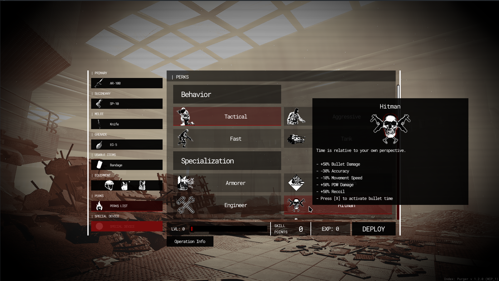

Module: loadout_system
Documentation last edited: October 23, 2025 at 14:33 UTC
Description
So, in the very old days, there weren't any menus for loadout. You had to pick the weapons all by yourself in a specific location where you just use the props to select your equipment. That's it. Did it work? It did. However, after testing build 4, after playing it a couple of times, I realized that... it's boring. No, seriously, it's boring to have a very limited set of weapons, a very limited set of armor, and, of course, no possibility to choose perks except for the special devices. That's when it was decided to make a menu for loadout instead. Why would you need to know about that? Well, if you'd take a look into code, you may notice some GARBAGE out there. Don't touch that garbage and just know what it does there.

General Technical Info
-
"res://modules/loadout_system/assets/ui_scene/loadout_ui.tscn"
is the scene that has the UI. Less likely you'd need to work with that, but, hey, you need to know just in case.
-
LoadoutSelection
node is the one that is opening up the fancy loadout UI.
-
LoadoutSystem
is the singleton that handles all the logic.
-
LoadoutSystem
is using
Globals
to store the data. It doesn't use the local variables and
Checkpoints
saving as much because it didn't have a proper saving system by the time when it was made.
Simple, isn't it?
How do you add an item?
- Locate
"res://modules/loadout_system/assets/items/"
- Decide what you want to add. Each folder is a separate category that is processed separately.
- Create an appropriate
Resource
-derived file.
-
LoadoutPerkItem
for perks.
-
LoadoutOperationItem
for "operations" (forget about it, it's outdated)
-
LoadoutWeaponItem
for weapons.
-
LoadoutSpecialDeviceItem
for special devices.
-
LoadoutArmorItem
for armor parts.
-
[For weapons]
Make an icon with
"loadout_iconmaker"
location.
-
[For everything else]
Follow the procedure for an icon:
- Get an image you want to work with.
- Pick an image editor of your choice.
- Open the image.
- Desaturate to black/white image.
- Tweak brightness/contrast (both brightness and contrast are high).
- Add sharpen.
- Cut out for transparency.
- Save at:
-
"res://modules/loadout_system/assets/ui_images/big_
[NAME]
.png"
for a big icon image.
-
"res://modules/loadout_system/assets/ui_images/small_
[NAME]
.png"
for a small icon image.
- Configure both
"image_icon"
and
"image_icon_small"
properties in your
LoadoutItemDataBase
-derived file.
Code example
# Set primary weapon
LoadoutSystem.set_primary_weapon("AR-100")
# Get primary weapon
var primary_weapon = LoadoutSystem.get_primary_weapon()
# There's also...
# get/set_secondary_weapon
# get/set_melee_weapon
# get/set_grenade_weapon
# get/set_usable_item
# get/set_special_device
# Apply an armor part
var item = load("res://modules/loadout_system/assets/items/armor/body/body_armor_lvl1.tres")
LoadoutSystem.set_armor_part(item.armor_type, item.get_armor_data_dict())
# Apply perks
var perks =
[
load("res://modules/loadout_system/assets/items/perks/complex/perk_maniac.tres"),
load("res://modules/loadout_system/assets/items/perks/behavior/perk_2_fast.tres")
]
LoadoutSystem.set_perks_list(perks)
# Give loadout to the player
var player = PlayerData.player
LoadoutSystem.refill_supplies()
var loadout = LoadoutSystem.LoadoutMask.new()
loadout.give_first = true
loadout.give_second = true
loadout.give_melee = true
loadout.give_item = true
loadout.give_grenade = true
loadout.give_special_device = false
loadout.give_armor = true
loadout.activate_perks = true
LoadoutSystem.give_loadout_to_player(loadout)
player.initialize_perk_related_things()
player.nv_enabled = false
player.flashlight_enabled = false
LoadoutSystem.reset_refill_supplies()
If you wonder about the mystery modes, you can check them at
"res://modules/loadout_system/src/logic/perk_mystery.gd"
Have fun.
General Information
Root directories list
assets, docs, src
Nodes
icon_gen_control
LoadoutSelection
LoadoutSystem
LoadoutPresentation
loadout_presentation_page
loadout_presentation_shared
item
main_control
Classes
LoadoutLogicBase
op_factory
perk_engineer
perk_hitman
perk_mystery
Resources
LoadoutArmorItem
LoadoutItemDataBase
LoadoutOperationItem
LoadoutPerkItem
LoadoutSpecialDeviceItem
LoadoutWeaponItem